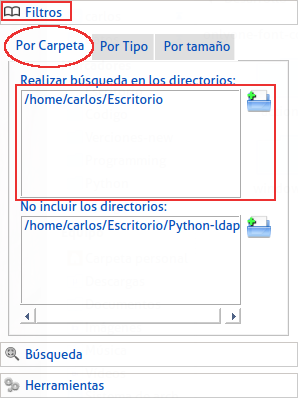
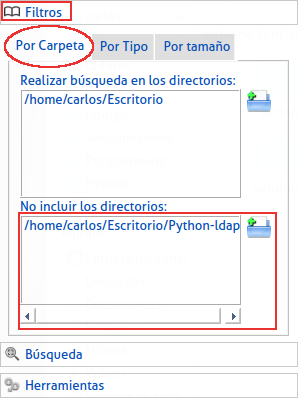

|
Aquí es donde se escoge los directorios donde se va a realizar la búsqueda, se encuentra en el menú a la izquierda, en la opción "filtros", escogemos "Por carpeta", para agregar una direccion damos click en el primer boton y luego la seleccionamos, en caso de desear eliminar una direccion escogida, dar click derecho en esta y saldra un menu con la opcion de eliminar |
|  |
|
En el segundo boton, también podemos adicionar varias direcciones, pero esta vez es todo lo contrario, para no buscar dentro de esos directorios. |
|  |